Overview
FitBiz is a fitness business management application, specially made for fitness coaches to manage their clients. It is primarily a desktop application where the user interacts via the Command Line Interface (CLI), and views data via the Graphical User Interface (GUI). This project is written in Java 11, packaged using Gradle, and uses JavaFX for the GUI.
Summary of Contributions
-
Major enhancement: developed the graph feature, which allows users to conveniently plot and display the progress made by a client for a certain exercise over time. Users can immediately see if the client has improved for that exercise over the months.
-
What it does: allows users to plot and display the graph of the specified exercise and specified y-axis from the stipulated start to end dates. Users have a choice of y-axis so that they can focus on one of the different attributes of an exercise, like the reps done or the weights lifted.
-
Justification: visualisation is always better than looking through a long list of exercises to check if a client has improved for an exercise. It is also much faster and easier to look at a graph to check for progress. The flexibility in axis type and dates also allows users to customise their graph to their needs.
-
Highlights: developed a
Graphmodel that has an axis type, exercise name, start and end dates. Checks are also in place to make sure that there are data points to be plotted, else there will be an error message. Sanity checks like the check that the start date cannot be later then the end date are also implemented.
-
-
Major enhancement: developed the personal best feature, which allows users to view the personal best records of their exercises immediately after keying in an exercise session.
-
What it does: allows users to efficiently and conveniently access their clients' personal best while updating the personal best table whenever changes to the exercise table is made.
-
Justification: instead of having to manually look through the entire exercise table to find a client’s personal best, the personal best will be immediately displayed when the user views a certain client. Changes made to the client’s exercise list will also be updated and displayed immediately.
-
Highlights: this feature was made to provide convenience to the user so that they do not have to go through extra commands or look through the entire exercise list to find their client’s personal best. This feature is also related to the graph feature as users will be able to see the progress of how a client achieves a personal best from the graph.
-
-
Minor enhancement: hooked the
view-ccommand to FitBiz and added relevant tests to FitBiz. -
Minor enhancement: added the height attribute to the
Clientclass. -
Overall contributions: 1.5K+ LOC | 90+ commits | 18 PRs merged | 50+ PRs reviewed
-
Other contributions:
-
Project management:
-
Managed labels and issues on the GitHub issue tracker
-
-
Enhancements to existing/teammates' features:
-
Documentation:
-
Summary:
-
Contributions to the User Guide
Given below are sections I contributed to the User Guide. They showcase my ability to write documentation targeting end-users. |
Delete a client: delete-c --- Li Zi Ying
You find that your client list contains a client who is no longer working with you and you would like to remove his details from your client list. delete-c allows you to delete the client at the specified index from your list of clients.
Format: delete-c INDEX
Parameters
This section acts as a summary of the important things to note when using delete-c including their parameters.
| Parameters | Important points to note |
|---|---|
|
|
Examples
Let’s say that you want to delete the client named "Alex Yeoh" in client list. You can simply use the delete-c command as shown.
-
Type
delete-c 1into the Command Box and pressEnterto execute it.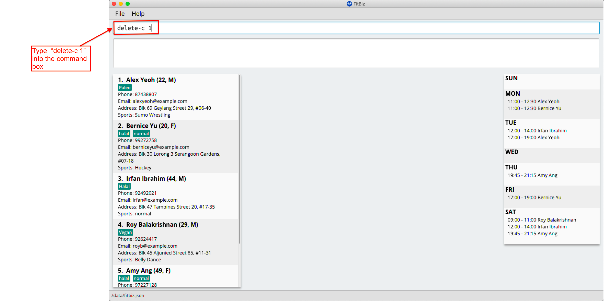 -
Result Box will display the message of the details of the deleted client. You can now see that the Client List no longer contains the deleted client.
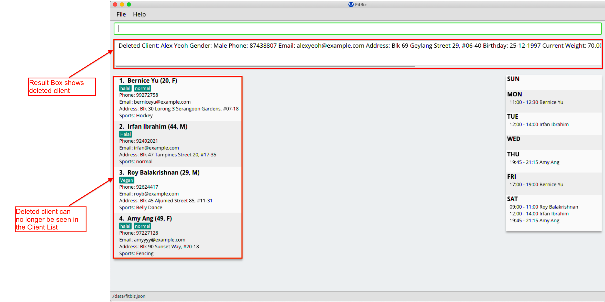
Common errors/problems
You might face some errors or difficulties when you use delete-c. In this section, you will be able to understand these errors and resolve them.
No index specified
If you type in delete-c without specifying the INDEX, no client will be deleted and an error message will be shown.
This happens because there is no INDEX specified. To correct this, you have to enter a valid INDEX after delete-c.
Index out of range
If you key in an INDEX that is out of range, that is if there are only 4 clients in the list but you try to key in delete-c 5, no client will be deleted and an error message will be shown.

To correct this, you have to enter a valid INDEX that is not more than the number of clients in the client list.
View a client profile: view-c --- Li Zi Ying
You might want to view the complete information of a certain client in your client list. This complete information includes the client’s full details, their exercise table and personal best table. view-c INDEX shows all available information of the client at the specified index.
Format: view-c INDEX
Parameters
This section acts as a summary of the important things to note when using view-c including their parameters.
| Parameters | Important points to note |
|---|---|
|
|
Examples
Let’s say that you want to view the details of the client named "Alex Yeoh" in client list. You can simply use the view-c command as shown.
-
Type
view-c 1into the Command Box and pressEnterto execute it.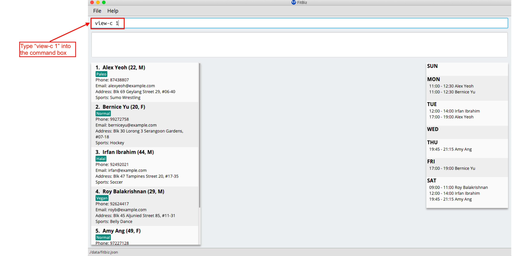 -
Result Box will display the message telling you the client currently in view. You can now see that the Client View is now populated with the client’s details, the exercise table and the personal best table.
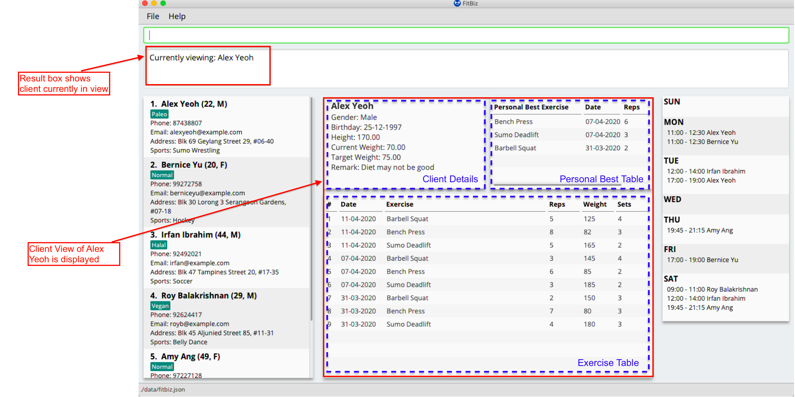
Common errors/problems
You might face some errors or difficulties when you use view-c. In this section, you will be able to understand these errors and resolve them.
No index specified
If you type in view-c without specifying the INDEX, no client will be viewed and an error message will be shown.

This happens because there is no INDEX specified. To correct this, you have to enter a valid INDEX after view-c.
Index out of range
If you key in an INDEX that is out of range, that is if there are only 5 clients in the list but you try to key in view-c 10, no client will be viewed and an error message will be shown.
To correct this, you have to enter a valid INDEX that is not more than the number of clients in the client list.
Display visualisations of training progress: graph --- Li Zi Ying
graph allows you to see a graphical visualisation of a client’s exercise progress within a specified timeframe, so that you can easily track your client’s progress and improvement.
Format: n/EXERCISE_NAME a/Y_AXIS sd/START_DATE ed/END_DATE
Parameters
This section acts as a summary of important things to note when using graph including their parameters.
| Parameters | Important points to note |
|---|---|
|
Substitute
|
|
Substitute
|
|
Substitute
The range of
|
|
Substitute
The range of
|
Example
Let’s say that you wish to view the exercise graph of Alex Yeoh for the exercise Sumo Deadlift from the date 01-01-2020 to 13-04-2020 and you want to focus on the weight he lifted during the exercise.
You can use the graph command to view the graph of the exercise following the steps as shown:
-
First view the client that you want to view the exercise graph of. For information on how to view the client, you can refer to the
view-csection. For this example, we will view the graph ofAlex Yeoh, who is the first client in the client list. After enteringview-c 1, you will see the full detailed information and a table of recorded exercises of clientAlex Yeoh.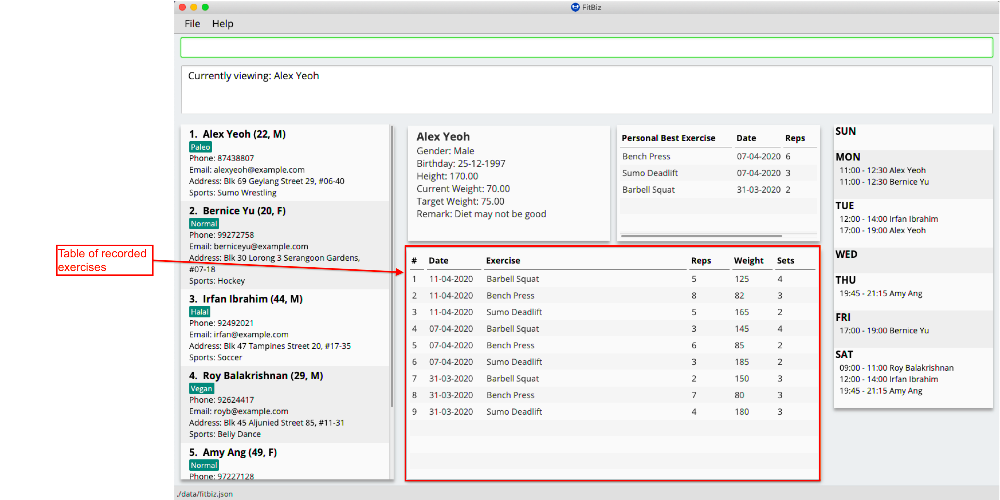 -
Next, simply type the graph command
graph n/Sumo Deadlift a/weight sd/01-01-2020 ed/13-04-2020into the Command Box.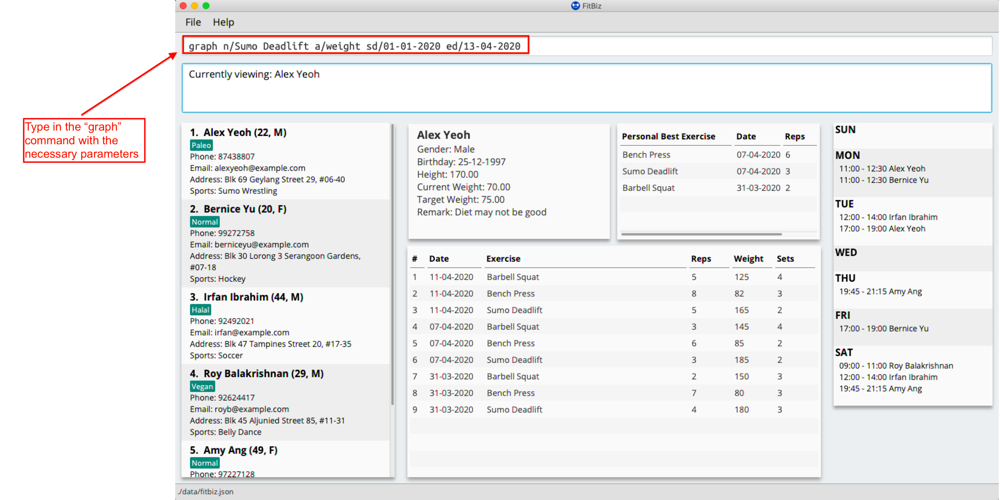 -
The graph will appear separately in a window.
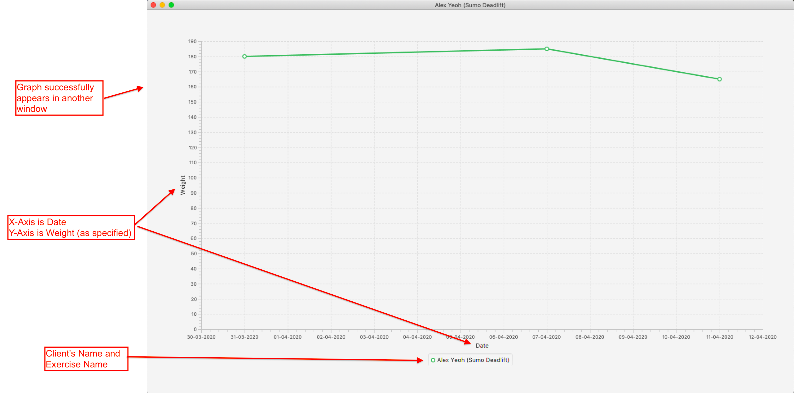 -
You will see the Result Box informing you of the current graph displayed. Note that any changes made using
add-e, edit-e, delete-ewill not be reflected in the graph.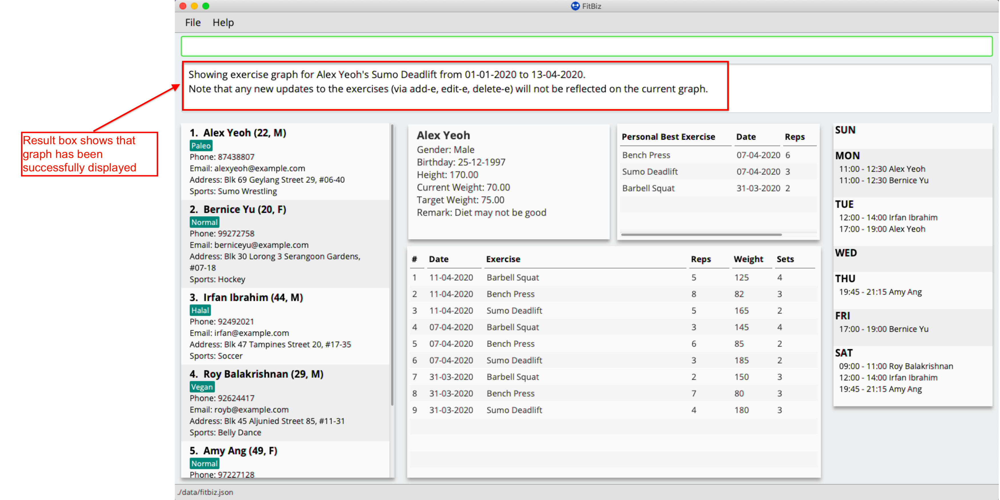
Common errors/problems
You might face some errors or difficulties when you use graph. In this section, you will be able to understand these errors and resolve them. You will also get a better understanding of the reply from the Result Box when using graph.
No exercise within stipulated timeframe
If you have keyed in the graph command in the correct format but the graph is not appearing, you might want to check the start and end dates in your command. In the example below, the exercise clearly exists in the exercise list, but not within the stipuated timeframe. Therefore the graph will not be displayed.
-
The exercise
Sumo Deadliftclearly exists in the exercise list. However, there are no records ofSumo Deadliftsfrom01-01-2020to01-02-2020.
-
The graph will not appear and an error message will be shown.

To correct this, change the timeframe to one where there is at least one existing record of the specified exercise in the current exercise list.
No exercise for stipulated axis
If you have keyed in the graph command in the correct format but the graph is not appearing, you might want to check the y-axis in your command. In the example below, the exercise clearly exists in the exercise list, but there are no inputs for the stipulated y-axis. Therefore the graph will not be displayed.
-
The exercise
Push Upclearly exists in the given timeframe. However, there are no inputs for weight as seen in the exercise table.
-
The graph will not appear and an error message will be shown.
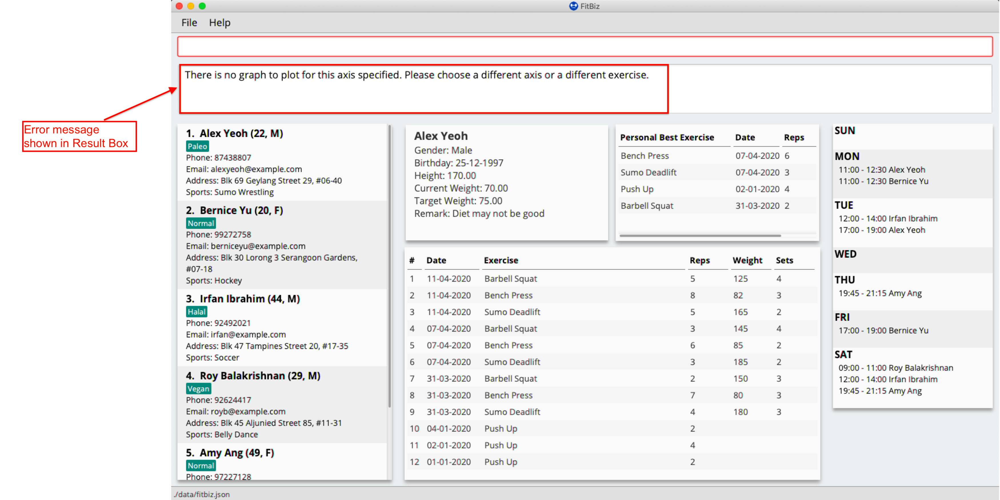
To correct this, change the axis to one where there is at least one non-empty input of the exercise in the current exercise list. You could also choose to view another exercise’s graph instead.
Invalid time frame
If you have keyed in the graph command in the command box but the graph is not appearing, you might want to check the start and end dates. In the example below, the command format looks correct but the start date is later than the end date. This is not allowed and therefore the graph will not be displayed.
-
The start date
01-04-2020is chronologically later than the end date01-02-2020.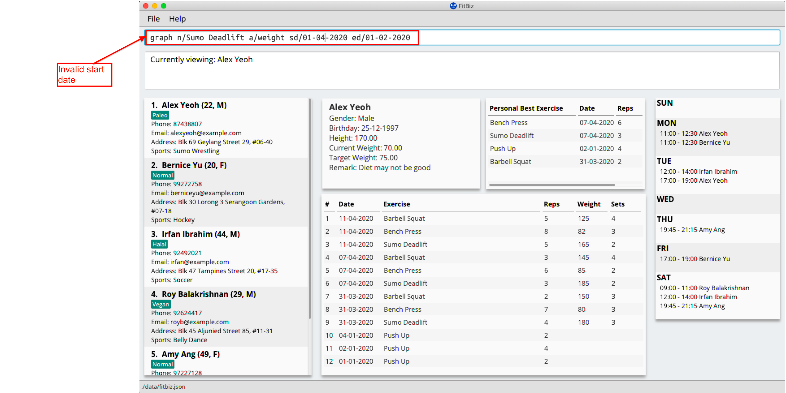 -
The graph will not appear and an error message will be shown.
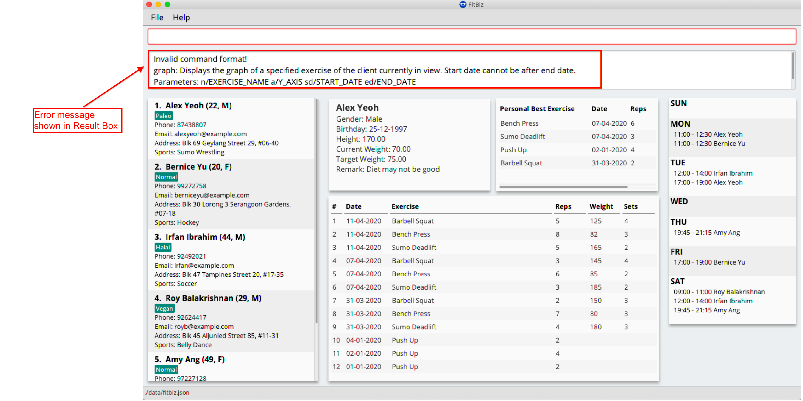
To correct this, the start date has to be earlier or the same as the end date.
Contributions to the Developer Guide
Given below are sections I contributed to the Developer Guide. They showcase my ability to write technical documentation and the technical depth of my contributions to the project. |
Personal Best --- Li Zi Ying
This feature allows the users (ie. gym managers) to view the personal bests of exercises done by a client. This information is displayed in a table form, after the command view-c INDEX is called.
Implementation
The personal best feature is facilitated by the model PersonalBest, and the logic behind it is in PersonalBestFinder. The behaviour of this feature determines the personal best of each exercise done by the client based on these considerations:
-
If the
ExerciseWeightattribute is recorded in theExercise, then theExerciseWeightis used as comparison -
If there is no
ExerciseWeightrecorded in theExercise, thenExerciseRepswill be used as comparison -
If neither of
ExerciseWeightandExerciseRepsare recorded into theExercise, then this particular exercise will not be put into the Exercise Personal Best table-
However, if the another
Exerciseof the same name is added in the future withExerciseWeightand/orExerciseRepsspecified, then the personal best of this exercise will still be calculated and shown in the Exercise Personal Best table
-
-
Note that
ExerciseSets, although an attribute of theExercisemodel, is not considered when checking forPersonalBestas the number of sets of an exercise does not contribute to a personal best record
A simplified class diagram of the classes involved in this feature is given below:

In the following sequence diagram, we trace the execution for when the user decides to enter the command view-c into FitBiz:
The explanation for the sequence diagram is as follows: when the user inputs view-c, add-e, edit-c or delete-c, PersonalBestFinder#generateAndSetPersonalBest is called, taking the client currently in view as the parameter. PersonalBestFinder#generateAndSetPersonalBest then retrieves client’s list of exercises using Client#getExerciseList and creates a new HashMap, where the key is ExerciseName and the value is Exercise. Then the personal bests of each exercise of the client in view are generated using the above considerations. Finally the list of personal bests is set using PersonalBest#setPersonalBest.
Design Considerations
In designing this feature, we had to decide on the placement of the PersonalBest class in the model to comply with the OOP standards. Currently, the PersonalBest model has a whole-part relationship with Client, with Client being the whole and PersonalBest being a part of Client. The alternative is to consider PersonalBest as a part of Exercise instead.
Put PersonalBest as a part of Client(Chosen) |
Put PersonalBest as a part of Exercise |
|
|---|---|---|
Adhering to OOP standards (Coupling and Cohesion) |
Increases cohesion as it logically makes more sense, currently each client has a list of exercises to themselves, and thus each client should also have a list of |
Increases coupling between the logic and model as every time the commands |
Ease of Implementation |
Might have significant conflicts as the |
Easier to implemention as methods related to |
We decided to use the first approach of placing PersonalBest as a part of Client instead of Exercise. There are multiple reasons for our choice as mentioned below.
We want to maintain the OOP structure of the program. Logically, the personal best should belong to the client as the list of exercises belongs to the client. As the list of exercises is unique to every client, the personal best should also be so. We also do not want to increase coupling of the program as mentioned in the table above.
Moreover, even though personal best is generated using the list of exercises in the client, it can be instantiated even without an exercise list. Therefore it does not require the exercise class to exist and does not have a whole-part relationship with exercise. Coupling will also be increased as the client will be relying on the exercise class to generate the personal best. Therefore, the final choice was to place the personal best under client, with every client having their own personal best attribute.
This personal best feature also leads into the Graph feature, which will be discussed in the next section, where we plot a graph of the client’s progress of a specified exercise.
Graph --- Li Zi Ying
This feature allows users to see the progress graph of the current client in view. The user has to specify the exercise name, the y-axis (either weights or reps), the start date and the end date. There has to be existing exercises in the client’s exercise list for the specified axis and time period for the graph to be plotted, if no graph can be plotted, an error will be thrown.
Implementation
The graph mechanism is faciliated by the model class Graph, which contains the details of the graph. These include ExerciseName, Axis, StartDate and EndDate. The figure below is a UML class diagram to illustrate the Graph model.
These attributes are bounded by these characteristics:
. ExerciseName can only be alphanumeric characters
. Axis can either be reps or weight only, case insensitive (sets are not considered due to the same reasoning in the above section)
. Earliest StartDate possible can only be one year before the current date and cannot be after EndDate. StartDate also cannot be a future date
. Earliest EndDate possible can only be one year before the current date and cannot be before StartDate. EndDate also cannot be a future date
Here is an activity diagram displaying the steps taken when FitBiz receives a user input for the graph command:

The behaviour of this feature determines the graph plotted of the exercise specified based on these considerations:
-
If there is no such exercise with the matching
ExerciseNamein the client’s exercise list from the specifiedStartDatetoEndDate, then the graph cannot be plotted -
If the
Axisinput isrepsand the exercise specified does not have any reps input withint theStartDatetoEndDate, then the graph cannot be plot -
If the
Axisinput isweightand the exercise specified does not have any weight input within theStartDatetoEndDate, then the graph cannot be plot -
If all of the above are fulfilled (ie. there is at least one valid exercise with the matching
ExerciseNameand has weight/reps input depending on theAxisspecified), then the graph will be plotted, with each exercise in chronological order
The flow of the program is illustrated using the sequence diagram below:

The explanation is as follows: when the user inputs graph with all relevant arguments input correctly, a new GraphCommand() is created, taking the newly created Graph object as parameter.
GraphCommand#execute() then retrieves the exercise list from the client currently in view and checks if there is at least one exercise with a matching exercise name. If there is no exercise to plot, then an error GraphCommand.MESSAGE_EXERCISE_NOT_IN_LIST will be thrown. Next, the list of exercises to be plot will be generated using Graph#generateGraphList(). Once again, there will be a sanity check to see if the list size is zero, which means that no graph cannot be plotted.
Design Considerations
In designing this feature, we had to decide on the implementation of certain classes like Axis to comply with the OOP standards of Abstraction.
Create enum class Axis Type(Chosen) |
Check for Axis value using raw types |
|
|---|---|---|
Adhering to OOP standards (Abstraction) |
Increases level of abstraction as there are only two different types of axis that can be chosen |
Less abstraction and increases complexity as we will have to check for the equality of the axis type using the equality check for the |
Ease of Implementation |
Requires some refactoring to include |
Easier to implemention as no extra classes or methods are needed, so no refactoring is needed |
We decided to use the approach of abstracting the axis types away into AxisType enum class. As the graph implementation will require a substantial amount of equality checks, especially for the attributes of Graph to make sure that we are drawing the correct graph for the user. As such equality checks are made, it makes it difficult to keep checking String equality as regular data types like String would allow invalid values to be assigned to a variable.
As our axis values can only be REPS, WEIGHT or NA, we can check for each case using the switch case method instead of checking for equality using raw types. This is also much more efficient than using multiple if-else statements. For example, in the code snippet below, the method fillSeries() uses switch case statements to add data values depending on the AxisType.
private void fillSeries() {
switch (axisType) {
case REPS:
fillRepsSeries();
yAxis.setLabel("Reps");
break;
case WEIGHT:
fillWeightSeries();
yAxis.setLabel("Weight");
break;
default:
}
}Moreover, to keep in line with the OOP standards, we decided that it will be better to abstract away data types like AxisType into its separate class instead of storing it as a raw type in Axis. This ensures the code quality of our program and reduces complexity (especially in terms of equality checking as mentioned above) by abstracting away the more complex details into classes of a lower level. The consideration of abstracting details away is also used for creating StartDate and EndDate classes as attributes of Graph, instead of using the Java in-built LocalDate.
By considering the above two factors, despite having to put in the extra effort to create a new AxisType class and thus requiring extra methods like getters and setters, we decided to move with the approach of creating the AxisType enum class and refactor to accomodate for the additional data type.